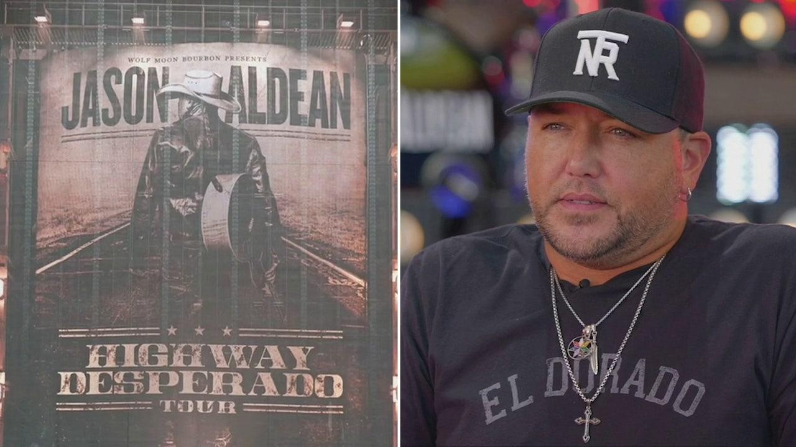

Jason Aldean talks release of 11th studio album, controversy over 'Try That In A Small Town'Country music star Jason Aldean joined "FOX & Friends" exclusively to discuss the release of his upcoming album "Highway Desperado" and the controversy around the hit song "Try That In A Small Town." The 11th studio album comes out Nov. 3 and features songs like "Try That In A Small Town," "Tough Crowd," and "Let Your Boys Be Country." In the interview airing Friday, Aldean said the album's name came from traveling across the country throughout his music career and living life on the road. "I just think for all of my adult life, pretty much and really since I've been 18 years old, you know, I've been traveling around the country and the world now playing music. And that's kind of what it feels like. It's like always on the run, living on the road," he said. "I will say it's one of the coolest things we've done, top to bottom song-wise, I think it's one of the best albums we've done." Aldean also addressed the controversy surrounding the "Try That In A Small Town" music video, telling "FOX & Friends" co-host Ainsley Earhardt, "The song just kind of said what I wanted it to say and kind of how I felt about the state of things right now. Why nobody in the music business will call that out I don't understand." The five-time Grammy Award nominee came under fire over the summer for his anti-crime song that used footage from the 2020 riots showing buildings burning and rioters looting. Country Music Television pulled the video amid backlash from the public, with some critics accusing him of releasing a "pro-lynching" song over its location as the site of Henry Choate's 1927 lynching. TackleBox, the production company for the music video, confirmed that it was shot at Maury County Courthouse, saying it's a "popular filming location outside of Nashville." Several music videos and movies have been filmed there, including the Lifetime Original movie "Steppin’ into the Holiday." TackleBox further stated that the site was featured in a Runaway June music video for their 2019 song "We Were Rich," the 2022 Paramount holiday film "A Nashville Country Christmas," and Miley Cyrus' 2009 film "Hannah Montana: The Movie." "I really didn't know what I was going to say or how I was going to approach that. And I got on stage that night and just kind of said whatever came to mind," Aldean said about performing the song onstage after the controversy erupted. "And so, the reaction to it was, the only way for me to explain, it was like explosive. It was like the place went crazy and they were like hanging on every word that we were saying. So I think right then I realized, OK, they get it, like they get the song," Aldean continued. "There's always going to be people that try to make something out of nothing. That's just that's the culture we live in. I get that. But if you really listen to the song, you get where I'm coming from because, you know, it's not about race, it's not about any of those things. I mean, I think people of all races are tired of dealing with the crap that's going on right now. You know what I mean? So it wasn't directed at one particular person, even though that's what they tried to make it seem." "Try That In A Small Town" reached No. 1 on the Billboard Hot 100 chart, something Aldean says he never expected. "[That] has never happened on that chart before. So, you know, and I think those are things like you can't plan for, you know. This was a song we put out. I had no idea. I thought the song was cool and something that, you know, I thought my fans would get. They would like the song and understand what I was trying to say," he said. "And I didn't expect, you know, things to blow up like they did in the video. And this thing [to] all of a sudden just take off like it did. That was kind of unexpected." For more Culture, Media, Education, Opinion, and channel coverage, visit foxnews.com/media |
 |